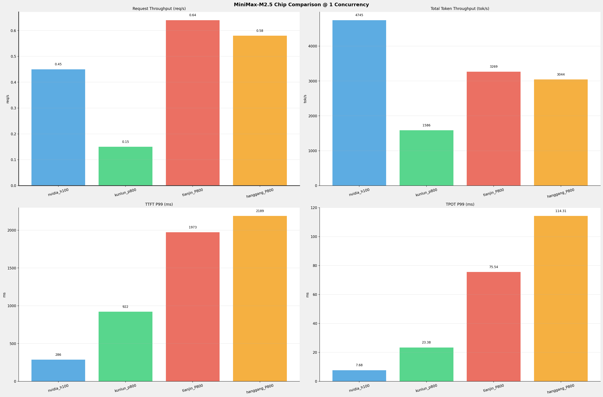
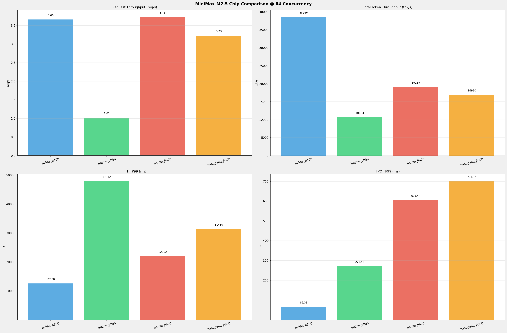
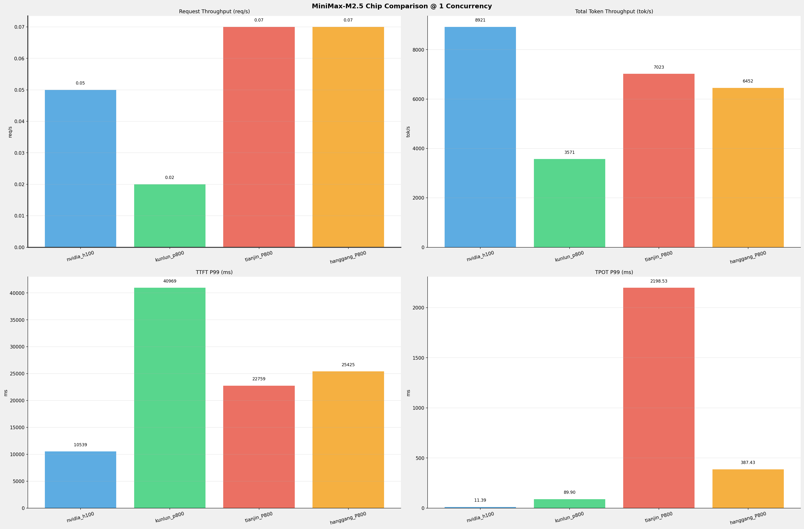
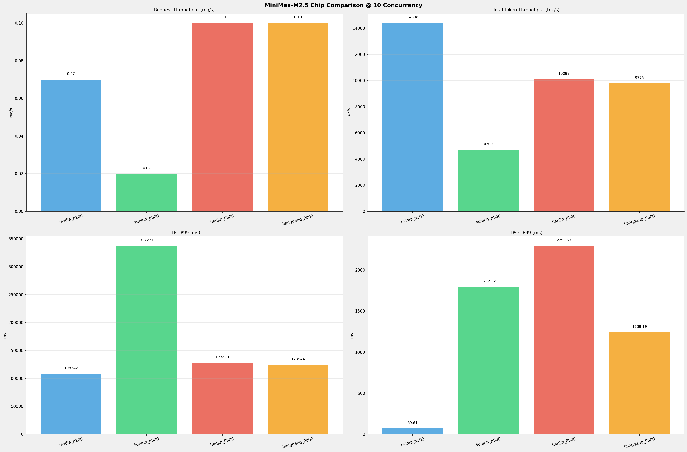

在固定请求数，输入上下文和输出上下文长度下，使用bench serve工具对并发数逐级增加场景的性能比对。
主要采集指标：
| 指标 | 单位 | 含义 |
|---|---|---|
| TTFT | ms | Time To First Token，首 token 延迟 |
| TPOT | ms/token | Time Per Output Token，每 token 生成时间 |
| Throughput | tokens/s | 系统总吞吐 |
| QPS | requests/s | 请求吞吐 |
| P50/P95/P99 Latency | ms | 延迟分位数 |
| 参数名称 | nvidia_h100 | kunlun_p800 | tianjin_P800 | hanggang_P800 |
|---|---|---|---|---|
| max_position_embeddings | 196608 | 196608 | 196608 | 196608 |
| model_name | MiniMax-M2.5 | MiniMax-M2.5-W8A8-INT8-Dynamic | MiniMax-M2.5-int8 | MiniMax-M2.5-int8 |
| model_size | 215G | 215G | 215G | 215G |
| python_version | 3.12.3 | 3.10.15 | 3.10.19 | 3.10.19 |
| quantization_config | FP8 | w8a8_int8 | w8a8_int8 | w8a8_int8 |
| temperature | 1.0 | 1.0 | 1.0 | 1.0 |
| top_k | 40 | 40 | 40 | 40 |
| top_p | 0.95 | 0.95 | 0.95 | 0.95 |
| transformers_version | 4.46.1 | 4.46.1 | 4.46.1 | 4.46.1 |
| vllm_version | 0.20.0 | 0.11.0 | N/A | N/A |
| sglang_version | N/A | N/A | 0.5.10+08768c8f9 | 0.5.10+08768c8f9 |
| 参数名称 | nvidia_h100 | kunlun_p800 | tianjin_P800 | hanggang_P800 |
|---|---|---|---|---|
| Attention Backend | N/A | N/A | kunlun | kunlun |
| Context Length | 196608 | 196608 | 196608 | 196608 |
| DP Size | 1 | 1 | 1 | 1 |
| PP Size | 1 | 1 | 1 | 1 |
| TP Size | 8 | 8 | 8 | 8 |
| EP Size | N/A | N/A | 8 | 8 |
| Block Size | default | 128 | N/A | N/A |
| Dtype | default | auto | bfloat16 | bfloat16 |
| Max Running Requests | 64 | 64 | 64 | 64 |
| Gpu Memory Utilization | 0.85 | 0.95 | 0.85 | 0.85 |
| Chunked Prefill Size | N/A | N/A | 8192 | 8192 |
| Max Num Batched Tokens | 8192 | 8192 | N/A | N/A |
| Cuda Graph Max Bs | N/A | N/A | 128 | 128 |
| Disable Radix Cache | N/A | N/A | True | True |
| Disable Radix Cache | N/A | N/A | True | True |
| Reasoning Parser | minimax_m2 | minimax_m2 | minimax | minimax |
| Tool Call Parser | minimax_m2 | minimax_m2 | minimax_m2 | minimax_m2 |
tianjin_P800和hanggang_P800环境的启动部署详细命令见《附录一》
benchmark测试命令见《附录二》
| 项目 | 配置 | 备注 |
|---|---|---|
| 数据集 | random | |
| 并发数 | 1, 64 | |
| 总请求数 | 320 | |
| 请求输入上下文长度 | 10240（10k） | |
| 请求输出上下文长度 | 256（0.25k） | |
| 被测芯片 | nvidia_h100, kunlun_p800, tianjin_P800, hanggang_P800 | |
| 被测模型 | MiniMax-M2.5 |
1并发

64并发

| 并发数 | nvidia_h100(基准) | kunlun_p800 | 相对基准 | tianjin_P800 | 相对基准 | hanggang_P800 | 相对基准 |
|---|---|---|---|---|---|---|---|
| 1 | 0.45 | 0.15 | -66.7% | 0.64 | +42.2% | 0.58 | +28.9% |
| 64 | 3.66 | 1.02 | -72.1% | 3.73 | +1.9% | 3.23 | -11.7% |
| 并发数 | nvidia_h100(基准) | kunlun_p800 | 相对基准 | tianjin_P800 | 相对基准 | hanggang_P800 | 相对基准 |
|---|---|---|---|---|---|---|---|
| 1 | 115.31 | 37.20 | -67.7% | 83.01 | -28.0% | 74.83 | -35.1% |
| 64 | 937.16 | 253.92 | -72.9% | 485.48 | -48.2% | 416.15 | -55.6% |
| 并发数 | nvidia_h100(基准) | kunlun_p800 | 相对基准 | tianjin_P800 | 相对基准 | hanggang_P800 | 相对基准 |
|---|---|---|---|---|---|---|---|
| 1 | 4745.14 | 1585.87 | -66.6% | 3269.11 | -31.1% | 3044.41 | -35.8% |
| 64 | 38566.45 | 10682.97 | -72.3% | 19118.70 | -50.4% | 16929.83 | -56.1% |
| 并发数 | nvidia_h100(基准) | kunlun_p800 | 相对基准 | tianjin_P800 | 相对基准 | hanggang_P800 | 相对基准 |
|---|---|---|---|---|---|---|---|
| 1 | 286.01 | 921.76 | +222.3% | 1972.91 | +589.8% | 2188.87 | +665.3% |
| 64 | 12557.76 | 47912.19 | +281.5% | 22001.51 | +75.2% | 31429.92 | +150.3% |
| 并发数 | nvidia_h100(基准) | kunlun_p800 | 相对基准 | tianjin_P800 | 相对基准 | hanggang_P800 | 相对基准 |
|---|---|---|---|---|---|---|---|
| 1 | 7.68 | 23.38 | +204.4% | 75.54 | +883.6% | 114.31 | +1388.4% |
| 64 | 66.03 | 271.54 | +311.2% | 605.44 | +816.9% | 701.16 | +961.9% |
| 并发数 | nvidia_h100(基准) | kunlun_p800 | 相对基准 | tianjin_P800 | 相对基准 | hanggang_P800 | 相对基准 |
|---|---|---|---|---|---|---|---|
| 1 | 8.57 | 24.07 | +180.9% | 107.20 | +1150.9% | 31.97 | +273.0% |
| 64 | 170.95 | 635.84 | +271.9% | 532.30 | +211.4% | 802.92 | +369.7% |
| 项目 | 配置 | 备注 |
|---|---|---|
| 数据集 | random | |
| 并发数 | 1, 10 | |
| 总请求数 | 100 | |
| 请求输入上下文长度 | 194560（190k） | |
| 请求输出上下文长度 | 1024（1k） | |
| 被测芯片 | nvidia_h100, kunlun_p800, tianjin_P800, hanggang_P800 | |
| 被测模型 | MiniMax-M2.5 |
1并发

10并发

| 并发数 | nvidia_h100(基准) | kunlun_p800 | 相对基准 | tianjin_P800 | 相对基准 | hanggang_P800 | 相对基准 |
|---|---|---|---|---|---|---|---|
| 1 | 0.05 | 0.02 | -60.0% | 0.07 | +40.0% | 0.07 | +40.0% |
| 10 | 0.07 | 0.02 | -71.4% | 0.10 | +42.9% | 0.10 | +42.9% |
| 并发数 | nvidia_h100(基准) | kunlun_p800 | 相对基准 | tianjin_P800 | 相对基准 | hanggang_P800 | 相对基准 |
|---|---|---|---|---|---|---|---|
| 1 | 46.70 | 2.92 | -93.7% | 35.49 | -24.0% | 33.72 | -27.8% |
| 10 | 75.37 | 3.70 | -95.1% | 51.02 | -32.3% | 51.09 | -32.2% |
| 并发数 | nvidia_h100(基准) | kunlun_p800 | 相对基准 | tianjin_P800 | 相对基准 | hanggang_P800 | 相对基准 |
|---|---|---|---|---|---|---|---|
| 1 | 8921.40 | 3571.06 | -60.0% | 7023.45 | -21.3% | 6451.81 | -27.7% |
| 10 | 14398.41 | 4699.60 | -67.4% | 10098.73 | -29.9% | 9775.15 | -32.1% |
| 并发数 | nvidia_h100(基准) | kunlun_p800 | 相对基准 | tianjin_P800 | 相对基准 | hanggang_P800 | 相对基准 |
|---|---|---|---|---|---|---|---|
| 1 | 10539.10 | 40968.87 | +288.7% | 22758.65 | +115.9% | 25424.84 | +141.2% |
| 10 | 108342.29 | 337270.92 | +211.3% | 127473.40 | +17.7% | 123944.29 | +14.4% |
| 并发数 | nvidia_h100(基准) | kunlun_p800 | 相对基准 | tianjin_P800 | 相对基准 | hanggang_P800 | 相对基准 |
|---|---|---|---|---|---|---|---|
| 1 | 11.39 | 89.90 | +689.3% | 2198.53 | +19202.3% | 387.43 | +3301.5% |
| 10 | 69.61 | 1792.32 | +2474.8% | 2293.63 | +3195.0% | 1239.19 | +1680.2% |
| 并发数 | nvidia_h100(基准) | kunlun_p800 | 相对基准 | tianjin_P800 | 相对基准 | hanggang_P800 | 相对基准 |
|---|---|---|---|---|---|---|---|
| 1 | 22.97 | 93.69 | +307.9% | 44.22 | +92.5% | 49.10 | +113.8% |
| 10 | 639.97 | 2848.90 | +345.2% | 5670.42 | +786.0% | 5572.12 | +770.7% |
天津和杭钢P800环境精度测试脚本见《附录三》
| Task | nvidia_h100(FP8) | kunlun_p800(W8A8-INT8-Dynamic) | 百分比 | tianjin_p800(W8A8-INT8) | 差值 | 百分比 |
|---|---|---|---|---|---|---|
| IFBench (Strict) | 0.6067 | 0.6233 | + 2.75% | 0.6967 | 0.0900 | + 14.84% |
| IFBench (Loose) | 0.6433 | 0.6600 | + 2.59% | 0.7400 | 0.0967 | + 15.03% |
| lm-eval:gsm_plus (Flexible) | 0.6863 | 0.7398 | + 7.80% | 0.7328 | 0.0465 | + 6.78% |
| lm-eval:gsm_plus (Strict) | 0.7307 | 0.7251 | - 0.77% | 0.7010 | -0.0297 | - 4.06% |
| lm-eval:mmlu_pro | 0.7378 | 0.6622 | - 10.25% | 0.6366 | -0.1012 | - 13.72% |
| lm-eval:ruler | 0.5461 | N/A | N/A | 0.8926 | 0.3465 | + 63.44% |
xMODEL_DIR=${model_dir:-/work/models/ssd4/models/MiniMax-M2.5-int8}DRAFT_MODEL_DIR=${draft_model_dir:-/work/models/ssd4/models/MiniMax-M2.5-Spec}export LD_LIBRARY_PATH=${CONDA_PREFIX}/lib/python3.10/site-packages/xtorch_ops:${CONDA_PREFIX}/lib/python3.10/site-packages/nvidia/cuda_nvrtc/lib:${CONDA_PREFIX}/lib/python3.10/site-packages/torch_xmlir/:/usr/local/cuda-11.7/:$LD_LIBRARY_PATHexport LD_LIBRARY_PATH=/usr/local/lib/:$LD_LIBRARY_PATHexport SGLANG_ENABLE_SPEC_V2=1export SGLANG_ENABLE_OVERLAP_PLAN_STREAM=1export BKCL_TREE_THRESHOLD=1048576export CUDA_DEVICE_ORDER="OAM_ID"export BKCL_INFERENCE=1export XSGL_INTERTYPE_BFP16=1export ENABLE_FAST_BFP16_ATTN=1export USE_FAST_BFP16_MOE=1export XSGL_FUSE_SPLIT_NORM_ROPE_NEOX=1export USE_ALL_TO_ALL=1export MIN_BATCH=32768export XPUAPI_SDNN_BF16_ROUND_MODE=3export XINFER_QUANT_SDNN=1export XPU_FLASH_ATTENTION_DECODER_USE_BALANCE=1export XMLIR_ENABLE_FAST_FC=trueexport XMLIR_FORCE_USE_XPU_GRAPH=1nohup python -m sglang.launch_server \ --host 0.0.0.0 \ --model-path "$MODEL_DIR" \ --tp-size 8 \ --ep-size 8 \ --kv-cache-dtype float16 \ --trust-remote-code \ --context-length 196608 \ --attention-backend kunlun \ --chunked-prefill-size 8192 \ --page-size 64 \ --mem-fraction-static 0.85 \ --tool-call-parser minimax-m2 \ --reasoning-parser minimax \ --disable-overlap-schedule \ --disable-radix-cache \ --disable-custom-all-reduce \ --max-running-requests 64 \ --dtype bfloat16 \ --cuda-graph-max-bs 128 \ --speculative-algorithm EAGLE3 \ --speculative-draft-model-path "$DRAFT_MODEL_DIR" \ --speculative-num-steps 3 \ --speculative-eagle-topk 1 \ --watchdog-timeout 3000000 >log_$(date +"%Y%m%d").log 2>&1 &xxxxxxxxxxpython3 -m sglang.bench_serving --backend sglang-oai-chat --base-url ${BASE_URL} --dataset-name random-ids --random-range-ratio 0.0 --served-model-name ${MODEL} --random-input-len 10240 --random-output-len 256 --max-concurrency 1 --num-prompt 320 --model ${MODEL_PATH}xxxxxxxxxxROOT_PATH=$(cd `dirname $0`; pwd)echo $ROOT_PATHcd ${ROOT_PATH}CurDate=`date +'%Y%m%d'`export NLTK_DATA=${ROOT_PATH}/nltk_dataAPI_BASE="${1:-http://127.0.0.1:30000/v1}"API_KEY="${2:-abc123}"MODEL="${3:-MiniMax-M2.5-int8}"cat > .env << EOFapi_base=$API_BASEapi_key=$API_KEYmodel=$MODELtemperature=1.0top_p=0.95top_k=40max_tokens=16384seed=42input_file=data/IFBench_test.jsonloutput_file=data/${MODEL}-responses.jsonlworkers=8EOF# 2. 生成模型响应uv run python3 generate_responses.py# 快速测试#uv run python generate_responses.py --limit 5# 3. Thinking 模型后处理（重要！）uv run python3 postprocess_thinking.py data/${MODEL}-responses.jsonl -o data/${MODEL}-clean.jsonl# 4. 运行评估uv run python3 -m run_eval \ --input_data=data/IFBench_test.jsonl \ --input_response_data=data/${MODEL}-clean.jsonl \ --output_dir=evalxxxxxxxxxxROOT_PATH=$(cd `dirname $0`; pwd)echo $ROOT_PATHcd ${ROOT_PATH}CurDate=$(date +'%Y%m%d%H%M%S')export HF_ENDPOINT=https://hf-mirror.comADDR=${ADDR:-127.0.0.1}PORT=${PORT:-30000}API_KEY=${API_KEY:-abc123}LLM_ADDR="http://$ADDR:$PORT"MODEL_NAME="/work/models/ssd4/models/MiniMax-M2.5-int8"LOCAL_MODEL_PATH="/data1/dingjs/work/models/ssd4/models/MiniMax-M2.5-int8"# model_args 构造MODEL_ARGS_BASE_1="{\"model\":\"$MODEL_NAME\",\"base_url\":\"$LLM_ADDR/v1/completions\",\"max_length\":131072,\"tokenizer\":\"$LOCAL_MODEL_PATH\",\"trust_remote_code\":true,\"num_concurrent\":10,\"max_retries\":3,\"timeout\":12000,\"tokenized_requests\":false,\"headers\":{\"Authorization\":\"Bearer $API_KEY\"}}"MODEL_ARGS_BASE_2="{\"model\":\"$MODEL_NAME\",\"base_url\":\"$LLM_ADDR/v1/completions\",\"max_length\":192512,\"tokenizer\":\"$LOCAL_MODEL_PATH\",\"trust_remote_code\":true,\"num_concurrent\":10,\"max_retries\":3,\"timeout\":12000,\"tokenized_requests\":false,\"headers\":{\"Authorization\":\"Bearer $API_KEY\"}}"# 运行单个任务的函数run_task_1() { local task_name=$1 local max_tokens=$2 local temperature=$3 local unsafe_code=$4 local do_sample="false" [ "$temperature" = "1.0" ] && do_sample="true" GEN_KWARGS="{\"max_gen_toks\":$max_tokens,\"do_sample\":$do_sample,\"temperature\":$temperature,\"top_p\":0.95,\"top_k\":40}" local unsafe_flag="" [ "$unsafe_code" = "true" ] && unsafe_flag="--confirm_run_unsafe_code" && export HF_ALLOW_CODE_EVAL=1 lm_eval \ --model local-completions \ --tasks $task_name \ --output_path ./output/${task_name}/mm25_${CurDate} \ --model_args "$MODEL_ARGS_BASE_1" \ --batch_size auto \ --gen_kwargs "$GEN_KWARGS" \ $unsafe_flag}run_task_2() { local task_name=$1 local max_tokens=$2 local temperature=$3 local unsafe_code=$4 local do_sample="false" [ "$temperature" = "1.0" ] && do_sample="true" GEN_KWARGS="{\"max_gen_toks\":$max_tokens,\"do_sample\":$do_sample,\"temperature\":$temperature,\"top_p\":0.95,\"top_k\":40}" local unsafe_flag="" [ "$unsafe_code" = "true" ] && unsafe_flag="--confirm_run_unsafe_code" && export HF_ALLOW_CODE_EVAL=1 lm_eval \ --model local-completions \ --tasks $task_name \ --output_path ./output/${task_name}/mm25_${CurDate} \ --model_args "$MODEL_ARGS_BASE_2" \ --batch_size auto \ --limit 32 \ --gen_kwargs "$GEN_KWARGS" \ $unsafe_flag}run_task_1 mmlu_pro 8192 0.0 falsesleep 120run_task_1 gsm_plus 8192 0.0 falsesleep 120run_task_2 ruler 8192 0.0 false